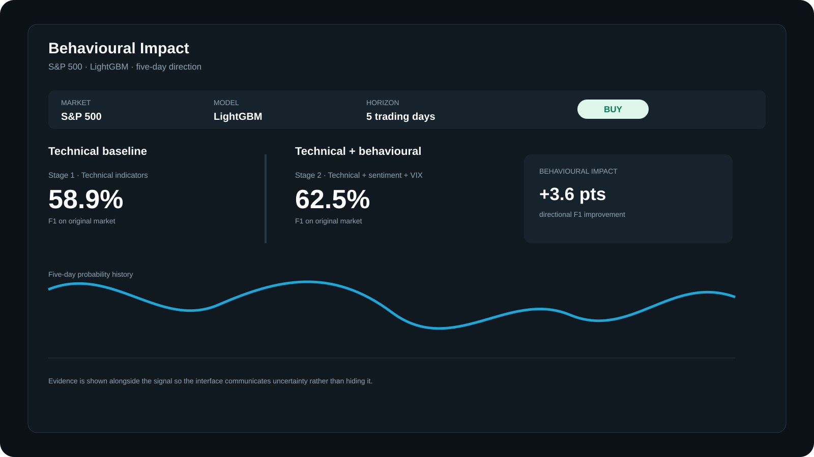
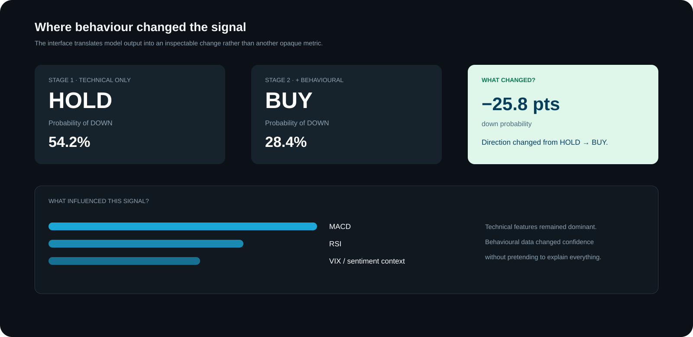

Technical indicators only
Price, volume, momentum, trend and volatility.
UX / PRODUCT / BEHAVIOUR
Making uncertain financial predictions easier to question, compare and understand.

Lambda BI asked us to investigate whether psychological market factors could help predict financial asset value.
As part of the group project, we combined technical indicators with news sentiment and market uncertainty across the S&P 500 and FTSE 100. I independently built the LightGBM classification model and my own Streamlit dashboard to communicate its findings.
I later treated that dashboard as a UX problem in its own right. I redesigned the multi-page, historical prototype into a clearer one-page comparison experience, using Stage 2 behavioural modelling to help investors compare behavioural indicators with the technical baseline.
The aim was not to make prediction look certain. It was to help users see what changed, why it changed and how much confidence the evidence deserved.
Historical evaluation results, not evidence of future investment returns.
The wider research was completed in a group of four. The LightGBM classification model, its optimisation, external validation and my dashboard were my individual work.
The original brief focused on predicting market value from psychological factors. But market behaviour is noisy, sentiment data is incomplete and a confident-looking output can easily overstate what a model knows.
How might I help an investor understand a model signal without encouraging blind trust in it?
My first dashboard translated the model out of notebooks, but it was still shaped around the analysis rather than the investor. It was split across pages, required scrolling and relied on historical data.
A non-technical investor still had to work out:
A prediction alone was not enough. The user needed comparison, context and limitations.
I used the modelling process as product discovery.
Price, volume, momentum, trend and volatility.
News sentiment, VIX and engineered rolling features.
Keeping the stages comparable made the behavioural contribution visible rather than assumed.
We initially tried to predict exact next-day returns. Most regression results were weak, with R-squared values negative or close to zero.
Rather than disguise that weakness, we changed the task to predicting the direction of the average return over the next five trading days. This was more useful for the intended mid-term investor and more honest about what the data could support.
When the evidence weakened the original idea, we changed the product promise.
Adding behavioural features improved my tuned LightGBM classifier in both markets: S&P 500 F1 58.9% → 62.5%; FTSE 100 F1 26.8% → 43.3%.
MACD, CCI, RSI, EMA and ATR carried most of the signal. Sentiment and VIX added context, but rarely led the prediction.
The S&P-trained LightGBM model reached 69.4% F1 on Russell 2000. A strong result in one market could not simply be assumed to work elsewhere.
I used three principles to translate the research into an investor experience.
Show the technical baseline and behavioural model together.
Display direction, probability and historical evidence as different pieces of information.
Let users move from a simple interpretation to the market and behavioural context behind it.
I reworked the experience around one question:
Did behavioural information change the technical signal enough to matter?

Stage 1 and Stage 2 appear together so users can see whether behavioural information changed the direction, the probability or neither.
Skill · Comparative information designAn UP or DOWN label is easy to scan, but probability prevents the label from looking certain.
Skill · Hierarchy and risk communicationInstead of exposing another technical metric, the interface explains how much behavioural data changed the probability and whether the final direction changed.
Skill · UX writing for complex systemsTechnical indicators, sentiment and VIX are presented within the same one-page flow.
Skill · Information architecture and cognitive-load reductionUsers select a market and date, compare the two model stages and inspect the surrounding technical and behavioural evidence from the same view.
The dark interface keeps attention on the evidence. Colour supports direction and sentiment, while text labels and probability values prevent colour from carrying meaning alone.

The original dashboard had no live-data layer. During the UX redesign, I separated what could be updated reliably from what still required a validated historical window.
Price and technical indicators can support current market context. Stage 2 cannot honestly be described as fully live without retrieving, timestamping and processing new financial news through the same sentiment pipeline used during training.
The redesign therefore uses Stage 2 for its intended strength: helping an investor compare how behavioural information affected a validated technical signal. It does not disguise historical behavioural data as a live prediction.
The model was evaluated. The redesigned investor experience still requires usability testing.
This is decision support, not financial advice.
The next iteration would replace direct BUY and SELL language with:
I would also add expandable “Why this signal?” explanations, keyboard-accessible charts, stronger contrast testing and a reduced-motion option.
I would run five moderated sessions with self-directed mid-term investors.
I would compare action-led language with evidence-led language and measure comprehension, task success and confidence calibration.
IMPACT
The redesign made the behavioural contribution inspectable in one place, connected each signal to its context and exposed where the evidence stopped.
It did not make an uncertain model certain. It made the uncertainty visible enough for a person to judge.
Problem framing · Information architecture · Interaction design · Data visualisation · Progressive disclosure · UX writing · Accessibility thinking
Explainability · Uncertainty communication · Confidence calibration · Transparent limitations
Behavioural-finance literature · Experimental comparison · Model evaluation · External validation
Python · LightGBM · Optuna · TimeSeriesSplit · SHAP · Streamlit · Plotly